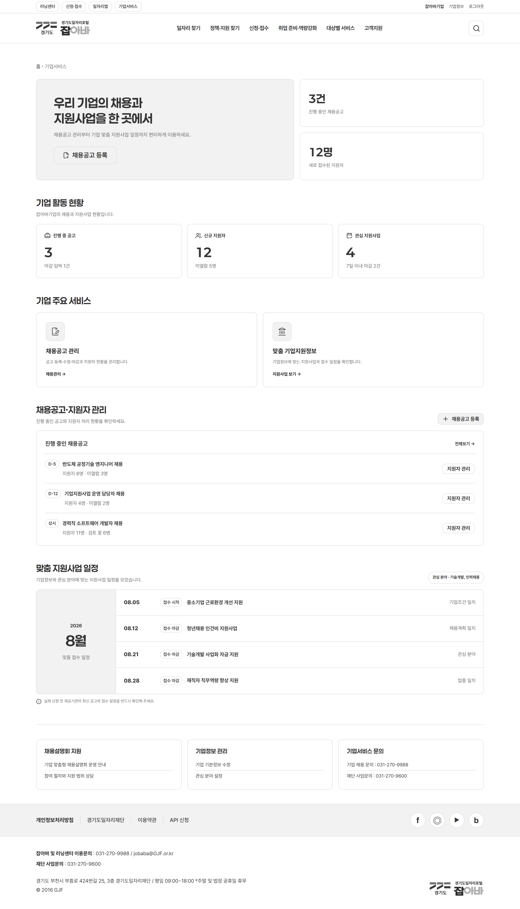

개발구분 [N] 신규 개발 — 운영 대응 화면 없음. 기업회원 로그인 후 우리 기업 현황 요약(공고 · 지원자) · 채용공고·지원자 관리 · 맞춤 지원사업 일정을 제공한다. 지원자 정보는 기업회원 권한 검증 후 최소 범위로 노출한다.

1234561234| 화면명 | 기업서비스 홈·기업회원 | 화면ID | 8.2.0 | 작성일자 | 2026-10-16 |
|---|---|---|---|---|---|
| 시스템명 | 잡아바 | 버전 | v 0.3.0 | 작성자 | 김창균 |
| 화면경로 | 잡아바 홈 > 기업서비스(기업회원) | SCR-ID | SCR-BIZM | ||
| 디자인 / 퍼블리싱 요청 | 기능 개발 요청 | ||
|---|---|---|---|
| 1 | FR-BIZ06 기업회원 히어로
| 1 | FR-BIZ06 기업 활동 현황 집계
|
| 2 | FR-BIZ06 기업 활동 현황
| 2 | FR-BIZ07 채용공고 · 지원자 조회
|
| 3 | FR-BIZ07 기업 서비스 바로가기
| 3 | FR-BIZ11 맞춤 지원사업 일정
|
| 4 | FR-BIZ07 채용공고 · 지원자 관리
| 4 | FR-BIZ12 기업정보 · 관심분야 관리
|
| 5 | FR-BIZ11 맞춤 지원사업 일정
| ||
| 6 | FR-BIZ12 하단 안내 영역
| ||
| # | 영역 | 구성 | FR ID |
|---|---|---|---|
| 1 | 히어로 | 기업명 인사 · 공고 등록 CTA · 현황 요약 | FR-BIZ06 |
| 2 | 기업 활동 현황 | 진행 중 공고 · 신규 지원자 · 관심 지원사업 | FR-BIZ06 |
| 3 | 서비스 바로가기 | 채용공고 관리 · 맞춤 기업지원정보 | FR-BIZ07·11 |
| 4 | 채용공고 · 지원자 관리 | 진행 공고 목록 + 공고별 지원자 관리 이동 | FR-BIZ07·09 |
| 5 | 맞춤 지원사업 일정 | 월 단위 신청기간·마감일 | FR-BIZ11 |
| 6 | 하단 안내 | 채용설명회 · 기업정보·관심분야 관리 · 문의 | FR-BIZ12 |
| 영역 | 로그인 전(8.1.0) | 기업회원(본 화면) |
|---|---|---|
| 히어로 | 서비스 소개 + 가입 CTA | 우리 기업 현황 + 공고 등록 CTA |
| 주요 영역 | 공개 정보 안내 | 활동 현황 · 공고/지원자 관리 · 맞춤 일정 |
| 지원자 정보 | 노출하지 않음 | 권한 검증 후 최소 범위 |